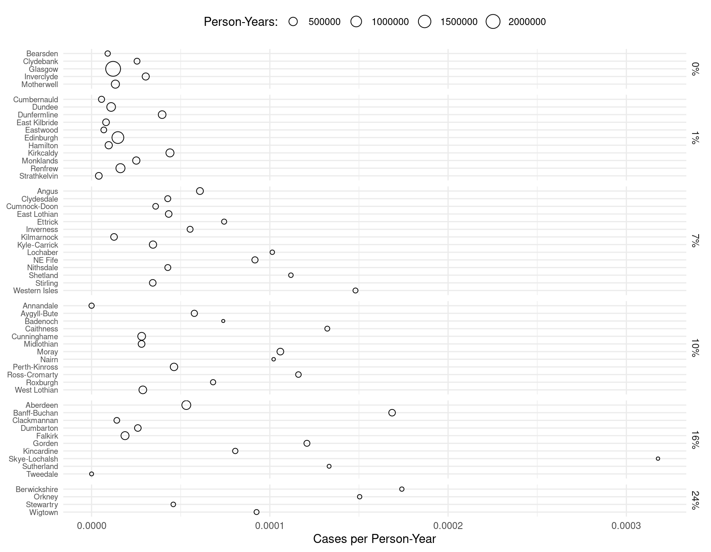
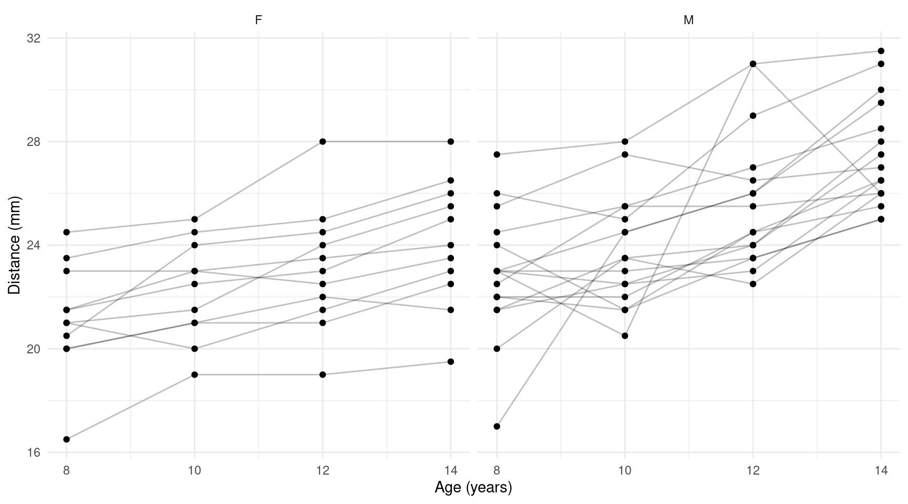
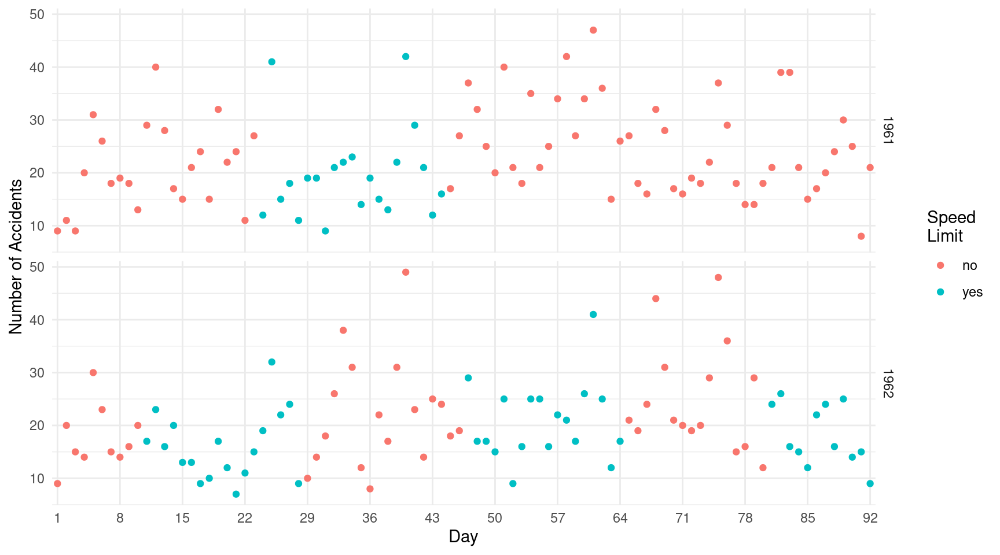

Categorical Response Variables and the Incidental Parameters Problem
Statistics 516, Homework 5
You can also download a PDF copy of this homework assignment.
The homework assignment concerns modeling categorical response
variables and dealing with the incidental parameter problem. Note that
you will need to have the following packages installed in addition to
the usual packages you have been using: epiR,
MethComp, ALA, VGAM,
geepack, and lme4 in addition to
several packages that have been used before such as
trtools, emmeans,
dplyr, and tidyr. Note that you should
already have the ALA package installed, but if you need
to install it again use the command
install.packages("ALA", repos = "http://R-Forge.R-project.org").
Instructions
This assignment is due by noon on Monday, May 15th. Late assignments will not be accepted after 6:00 AM on Tuesday, May 16th. Email me your homework at trjohns@uidaho.edu. Please submit your homework as a PDF file. Late assignments will be penalized by 10% if turned-in within 12 hours of the deadline, and 10% more for each additional 12 hour interval.
Your solutions must be typed and very neatly organized. I will not try to infer your solutions if they are not clearly presented. Mathematical expressions need not be typeset perfectly but they should be clear. You may substitute letters for symbols (e.g., b1 for \(\beta_1\)) and use other shortcuts for mathematical notation if no meaning is lost.
You must include with your solutions the relevant R output and R code that created them. Be sure that you provide sufficient code that I can replicate your results. Include both the code and the output within the text of your solutions (not in an appendix) using cut-and-paste. Edit your output so as to provide only that which is relevant to answering the questions. Use a monospace font (e.g., Courier or Monoco) for R code and output for clarity. Do not use a monospace font for text that is not R code or output. Do not answers to questions as comments in R code or Rmarkdown. Use the R command
options(digits = 4)(or some other small number of digits) or reduce the font size to avoid having your output “wrap” across multiple lines. Do not include in your solutions the text of the original question or unnecessary code or output.Plots from R Studio can be exported in various formats or directly to the clipboard using the “export” menu in the top-left part of the plot panel.
It is permitted for you to discuss the homework with other students in the course. However your work including R code, output, and written answers must be your own.
You are very welcome to ask me questions. I will be happy to clarify what I am asking in any of the questions and will provide you some help with solving problems by showing you how to work through similar problems from class. I will also be open to helping with any R problems. If you email me with a R question, it will usually be helpful for you to include enough of your R script so that I can replicate your issue. But please avoid saving all your questions for just before the assignment is due. I can usually respond quickly to questions, but I will sometimes need time to respond.
Lip Cancer in Scotland: The Random Effect of District
Recall the model for the lip cancer data from Scotland used in the third and fourth homework assignments. Here again is the code to process and plot the raw data showing the observed rate of lip cancer per person-year by percent of the population engaged in outdoor activity.
library(epiR)
library(dplyr)
library(ggplot2)
data(epi.SClip)
lipcancer <- epi.SClip %>%
mutate(district = factor(district, levels = rev(sort(unique(district))))) %>%
mutate(percent = paste(prop.ag, "%", sep = "")) %>%
mutate(percent = reorder(percent, prop.ag)) %>%
select(district, cases, population, percent)
p <- ggplot(lipcancer, aes(y = district, x = cases/population)) +
theme_minimal() + geom_point(aes(size = population), shape = 21) +
facet_grid(percent ~ ., scales = "free_y", space = "free_y") +
labs(y = NULL, x = "Cases per Person-Year", size = "Person-Years:") +
scale_x_continuous(labels = scales::label_number()) +
theme(axis.text.y = element_text(size = 7), legend.position = "top")
plot(p) In the previous homework assignment you noted that there may be some over-dispersion which may be due to variation in the lip cancer rate over districts other than that accounted for by the percent of the population engaged in outdoor activity. To account for that over-dispersion you used a quasi-likelihood approach to “adjust” inferences to the over-dispersion. Another approach that could be used is to specify the effect of district as a random effect.1
Estimate a Poisson regression model like you did in the third homework assignment, but this time specifying a random “main effect” for district. Report the model parameter estimates and standard errors using
summaryorlinconso that I can verify that you estimated the model correctly.Using
contrastor the emmeans package, estimate the expected number of cases of lip cancer per 100K person-years for each value of the percent of the population spent in outdoor activities.In the third homework assignment I asked you to estimate and interpret rate ratios that compared the rate of lip cancer at 1%, 7%, 10%, 16%, and 24% versus 0% of the population involved in outdoor activity. This time estimate and interpret rate ratios that compare consecutive values of the percent of the population involved in outdoor activity (i.e., 0% versus 1%, 1% versus 7%, 7% versus 10%, and so on).
Comparing Methods of Measuring Blood Oxygen Saturation
The data frame ox in the MethComp
package is from a study comparing two methods of measuring blood oxygen
saturation: chemical analysis or using a pulse oximeter.2 Measurements were
taken using both methods for each of 61 children. Multiple readings
(replicates) were taken using each method in quick succession. For most
children there were three replicates per method for a total of six
measurements per child. Here are first few observations, sorted by the
child (item).
library(dplyr)
library(tibble) # to use the remove_rownames function
library(MethComp)
data(ox)
ox <- ox %>% arrange(item) %>% remove_rownames()
head(ox, 12) meth item repl y
1 CO 1 1 78.0
2 CO 1 2 76.4
3 CO 1 3 77.2
4 pulse 1 1 71.0
5 pulse 1 2 72.0
6 pulse 1 3 73.0
7 CO 2 1 68.7
8 CO 2 2 67.6
9 CO 2 3 68.3
10 pulse 2 1 68.0
11 pulse 2 2 67.0
12 pulse 2 3 68.0Note that here meth is the method of measuring oxygen
saturation (CO is chemical analysis and pulse
is pulse oximeter), item identifies the child,
repl is the replicate, and y is the
measurement of oxygen saturation. The plot below shows the raw data.
library(ggplot2)
p <- ggplot(ox, aes(y = factor(item), x = y, color = meth)) +
theme_minimal() + geom_point(alpha = 0.5) + scale_y_discrete(limits = rev) +
labs(y = "Child Identifier", x = "Oxygen Saturation (Percent)", color = "Method")
plot(p) The plot shows some evidence of an “effect” for the child — i.e.,
children may naturally vary with respect to their average blood oxygen
saturation. This can induce a lack of independence of the observations
among those from the same child. We can also see this in a scatter plot
of the average measurement for each child by method.3
The plot shows some evidence of an “effect” for the child — i.e.,
children may naturally vary with respect to their average blood oxygen
saturation. This can induce a lack of independence of the observations
among those from the same child. We can also see this in a scatter plot
of the average measurement for each child by method.3
library(tidyr) # to use the pivot_wider function
oxaverages <- ox %>% group_by(item, meth) %>%
summarize(y = mean(y)) %>% pivot_wider(names_from = meth, values_from = y)
p <- ggplot(oxaverages, aes(x = CO, y = pulse)) + theme_minimal() +
geom_abline(intercept = 0, slope = 1) +
geom_point(alpha = 0.5) + coord_fixed() +
labs(x = "Chemical Analyis", y = "Pulse Oximeter")
plot(p) The lack of independence is suggested by the strong correlation between the average measurements. Here you will consider some different ways to account for this (or not).
Estimate the following four linear models with the oxygen saturation measurement as the response variable and the method of measurement as an explanatory variable: a model that ignores the effect of child (using the
lmfunction), a marginal model estimated using generalized estimating equations that attempts to account for the lack of independence of observations from the same child (using thegeeglmfunction), a fixed effects model with child used as a factor explanatory variable (using thelmfunction), and a mixed effects model with a random “main effect” for child (using thelmerfunction). For each model report the parameter estimates and standard errors using either thesummaryorlinconfunction so that I can verify that you estimated the model correctly. When usinggeeglmbe sure to use the sorted data frame (see the code above) and an exchangeable correlation structure.For each of the four models you estimated above, estimate (a) the expected blood oxygen saturation observed for each method, and (b) the difference in the expected blood oxygen saturation between the two methods. This can be done using
lincon,contrast, or with the emmeans package, but be sure that you provide estimates and standard errors.Compare the parameter estimates and standard errors you obtained for the quantities you estimated in the previous problem across the four models. Discuss briefly what did and did not change (much).
Estimate a linear mixed effects model that specifies an interaction between the child and the method of measurement as a second random effect. Report the parameter estimates and standard errors, and estimate the quantities that you estimated in the second problem now using this model.
Weight Gain in Rats Exposed to Thiouracil and Thyroxin
In the first homework assignment you encountered data from a study on the effects of thiouracil and thyroxin on growth of rats. Here are the first few rows of the data frame.
library(ALA)
head(rat,10) id treatment week weight
1 1 control 0 57
28 1 control 1 86
55 1 control 2 114
82 1 control 3 139
109 1 control 4 172
2 2 control 0 60
29 2 control 1 93
56 2 control 2 123
83 2 control 3 146
110 2 control 4 177Note that the variable id identifies the rat and that
there are multiple observations for each rat. The plot below shows the
raw data with line segments joining observations from the same rat.
library(ALA)
library(ggplot2)
p <- ggplot(rat, aes(x = week, y = weight)) + theme_minimal() +
geom_line(aes(group = id), alpha = 0.25) + geom_point(alpha = 0.5) +
labs(x = "Week", y = "Weight (g)") + facet_wrap(~treatment)
plot(p) In the first homework assignment we ignored the fact that there are multiple observations from each rat, but this may be important to take into account. We can think of the rat as being a factor with as many levels as there are rats (27), and that this categorical variable may have an “effect” in the sense that rats can vary in terms of their size, but also may grow at different rates (similar to what we observed for the Sitka spruce tree experiment from lecture). Here you will model the data using a random effects approach to account for the effect of rat.
In the seventh part of the Weight Gain in Rats Exposed to Thiouracil and Thyroxin problem on the first homework assignment you were asked to estimate a model with the model formula
weight ~ treatment:week. This model can be written as \[ E(Y_i) = \begin{cases} \beta_0 + \beta_1 w_i, & \text{if the treatment for the $i$-th observation is control}, \\ \beta_0 + \beta_2 w_i, & \text{if the treatment for the $i$-th observation is thiouracil}, \\ \beta_0 + \beta_3 w_i, & \text{if the treatment for the $i$-th observation is thyroxin}, \end{cases} \] where \(Y_i\) and \(w_i\) are the \(i\)-th observations of weight and week, respectively. Note that this model allows for differences in the growth rate depending on the treatment, but assumes that the expected weight at zero weeks is the same across treatments since at that point no drug had been administered. Now consider a mixed effects model with a random “main effect” for rat which can be written as \[ E(Y_{ij}) = \begin{cases} \beta_0 + \beta_1 w_{ij} + \delta_i, & \text{if the treatment for the $i$-th rat is control}, \\ \beta_0 + \beta_2 w_{ij} + \delta_i, & \text{if the treatment for the $i$-th rat is thiouracil}, \\ \beta_0 + \beta_3 w_{ij} + \delta_i, & \text{if the treatment for the $i$-th rat is thyroxin}, \end{cases} \] where now \(Y_{ij}\) and \(w_{ij}\) are the weight and week for the \(j\)-th observation of the \(i\)-th rat. Here \(\delta_i\) is a random parameter that represents the random effect of rat. Another model that allows for differences in the growth rate of rats by including an “interaction” between rat and week could be written as \[ E(Y_{ij}) = \begin{cases} \beta_0 + \beta_1 w_{ij} + \delta_i + \gamma_i w_{ij}, & \text{if the treatment for the $i$-th rat is control}, \\ \beta_0 + \beta_2 w_{ij} + \delta_i + \gamma_i w_{ij}, & \text{if the treatment for the $i$-th rat is thiouracil}, \\ \beta_0 + \beta_3 w_{ij} + \delta_i + \gamma_i w_{ij}, & \text{if the treatment for the $i$-th rat is thyroxin}, \end{cases} \] where \(\gamma_i\) is a second random parameter for the interaction between rat and week. Estimate these two mixed effects models, and show the results using eithersummaryorlinconso that I can verify that you estimated the model correctly. Note that you will still want to include the same fixed effects structure as the original model with the termtreatment:week, but extend the model to include one or two random effects.Using the model you estimated with two random effects (i.e., the model with a random effect for the interaction between rat and week), estimate the expected weight of a rat at the fourth week for each treatment condition. Also estimate the three pairwise differences among these three expected weights. You can use
lincon,contrast, or the emmeans package for this. Be sure to include standard errors and confidence intervals.
Seatbelt Use and Degree of Injury in Auto Accidents
The following data shows the number of auto accidents resulting in various levels of injury by victim gender, accident location, and whether not the victim was wearing a seat belt.4
seatbelt <- data.frame(gender = rep(c("female","male"), each = 4),
location = rep(rep(c("urban","rural"), each = 2), 2), seatbelt = rep(c("no","yes"), 4),
I1 = c(7287, 11587, 3246, 6134, 10381, 10969, 6123, 6693),
I2 = c(175, 126, 73, 94, 136, 83, 141, 74),
I3 = c(720, 577, 710, 564, 566, 259, 710, 353),
I4 = c(91, 48, 159, 92, 96, 37, 188, 74),
I5 = c(10, 8, 31, 17, 14, 1, 45, 12))
seatbelt gender location seatbelt I1 I2 I3 I4 I5
1 female urban no 7287 175 720 91 10
2 female urban yes 11587 126 577 48 8
3 female rural no 3246 73 710 159 31
4 female rural yes 6134 94 564 92 17
5 male urban no 10381 136 566 96 14
6 male urban yes 10969 83 259 37 1
7 male rural no 6123 141 710 188 45
8 male rural yes 6693 74 353 74 12The variables I1 through I5 denote the
level of injury: non injured (I1), injured but
not transported by emergency medical services (I2),
injured and transported by emergency medical services but not
hospitalized (I3), injured and hospitalized but
did not die (I4), and injured and died
(I5). The injury levels are ordered by severity. Note that
the data are in aggregated form showing the number of accidents at each
injury level for each combination of gender, location, and seat belt
use. Use these data in the following.
Use the
vglmfunction from the VGAM package to estimate a sequential regression model similar to a model we considered for thepneumodata in lecture on April 14. Use the injury level as the response variable, and use location and seat belt use as the explanatory variables, but not gender.5 For this model do not specify any interactions. Note that the model should be specified with the injury levels ordered as listed above from I1 to I5. Use a logit link function. Do not use theparalleloption for this model. Report the parameter estimates usingsummaryso that I can verify that you specified the model correctly.The sequential model you specified in the previous problem is effectively equivalent to four logistic regression models: one for whether an individual was injured (I2, I3, I4, or I5) or not injured (I1), another for whether an injured person was not transported (I2) or was transported (I3, I4, or I5), another for whether a transported person was hospitalized (I4 or I5) or was not hospitalized (I3), and finally a model for whether those that required hospitalization died (I5) or did not die (I4). The model you estimated in the previous problem can be used to compute odds ratios for the effect of using a seat belt (or not) with respect to each of these four situations. Report those four odds ratios and write a sentence for each odds ratio that explains how it is interpreted in terms of the statistical effect of wearing a seat belt (or not).
In most cases when random effects are specified there are two or more observations per level of the factor(s) that define the random effect(s). Specifying the random effects can then help account for a lack of independence of observations from the same experimental/observational unit. But in some cases like this one a random effect can induce over-dispersion without dependencies among the observations because there is only one observation per unit.↩︎
Source: Carstensen, B. (2010). Comparing clinical measurement methods: A practical guide. Wiley.↩︎
Using
coord_fixed()forces a one-to-one aspect ratio of the axes, which is appropriate here since they are on the same scale.↩︎Source: Agresti, A. (2013). Categorical data analysis (3rd ed). Hoboken, NJ: Wiley.↩︎
Including location may be important as the severity of accidents may vary between urban and rural locations. Gender could be included as a (poor) proxy for weight, which could be related to severity of accidents — particular for those not wearing seat belts. In that case it would be important to include an interaction between gender (or, ideally, weight) and seat belt use. But for the purpose of this exercise we are going to keep the model very simple.↩︎